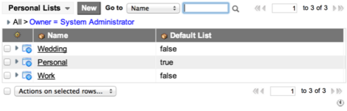

Using Personal Tasks
| |
Note: This article applies to Fuji and earlier releases. For more current information, see Visual Task Board Use at http://docs.servicenow.com
The ServiceNow Wiki is no longer being updated. Visit http://docs.servicenow.com for the latest product documentation. |
Contents
1 Overview
You can use personal tasks to:
- Create personal tasks, allowing you to manage your list of tasks efficiently and access this list from desktop or mobile devices.
- Organize personal tasks into groups, using personal task lists to reflect different projects or work commitments.
- Mark tasks as closed when they are finished and view lists of your active and closed tasks.
- Use filtered lists to make standard queries, showing information such as which tasks are due tomorrow. You can also create your own filtered lists to make your own queries.
2 Creating Personal Tasks
- Navigate to Personal Tasks > Create Task.
- Fill in the fields (see table).
- Click Submit.
{kind=link}
| Field | Description |
|---|---|
| Number | An automatically-generated task ID. |
| Owner | The task owner. Initially, this is the task creator. |
| List | The list this task belongs to. If unspecified, the task is placed in the default list. |
| Assigned to | The user who the task is assigned to. |
| State | The state of the task. Values can be Active or Closed. Active and closed tasks can be viewed from Personal Tasks > My Active, and Personal Tasks > My Closed. |
| Members | Users who are associated with, or have an interest in, the task. Members can view and edit tasks in the same way that task owners can. |
| Priority | The task priority. Values can be 1 - High, 2 - medium, or 3 - low. |
| Created | The date and time the task was created. This is automatically set when the task is submitted. |
| Due Date | Date and time when the task is due. |
| Updated | Date and time the task was last updated. This is automatically set when the task is updated. |
| Description | A short summary of the task. |
| Long description | A more detailed task description. |
| Comments | Any comments about the work to be done or the progress. Comments are generally added while working on the task. |
3 Viewing Tasks
A personal task can be viewed by users who:
- Own the task.
- Have been assigned to the task.
- Are associated with (a member of) the task.
Navigate to Personal Tasks > My Active or Personal Tasks > My Complete to view tasks in the Active or Complete state that are in some way associated with you.
{kind=link}
Click a task number to view and edit details for that task.
4 Using Lists
Task lists allow tasks to be grouped, categorized, and managed. You can:
- Create your own personal lists to group and view your own tasks, for example all tasks associated with a specific project.
- View filtered lists to display standard information, such as which tasks are due tomorrow.
- Create personal filtered lists to display your own reports, using standard condition builders.
4.1 Creating Personal Lists
- Navigate to Personal Tasks > Lists > Personal Lists to view your own task lists.
- By default, two task lists are provided: Personal and Work.
- Click New.
- Enter the list details:
- Name: Enter the list name.
- Default List: Select the check box to make this the default list which new tasks are automatically assigned to. Only one list can be the default list.
- Click Submit.
- The list appears alongside the other lists.
- 
{kind=link}
{kind=link}
4.2 Viewing Filtered Lists
Filtered lists show reports of tasks that you are associated with, that meet specific standard filter conditions. Administrators can customize these lists using standard condition builder functions.
- Navigate to Personal Tasks > Lists > Filtered Lists to view the default filtered lists available to view.
- Click a list to view the associated tasks.
{kind=link}
{kind=link}
4.3 Using Filtered Personal Lists
You can create filtered personal lists to show tasks that meet a customized filter condition.
Administrators can:
- Set a filtered personal list as global to make it visible as a new standard filtered list.
- Change the owner for the list.
To create a filtered personal list:
- Navigate to Personal Tasks > Lists > My Filtered Lists to view any of your own personal filtered lists.
- Click New to create a new personal filtered list.
- Fill in the details, using standard condition builder functions to define the conditions for your personal list.
- Click Submit.
{kind=link}